Youth4CulturalHeritage
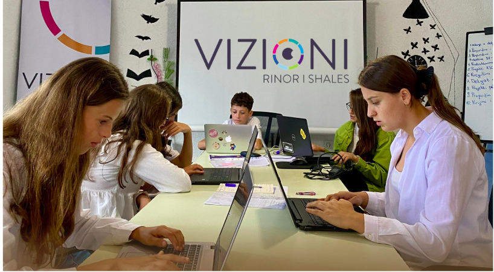Projekti ‘Youth4CulturalHeritage’ ka për qëllim ngritjen dhe edukimin jo-formal të të rinjëve të Komunës së Lipjanit të moshës 13-15 të shkollave ‘Ibrahim Banushi’ Shalë, ‘Vezir Kolshi’ Baicë, ‘Dy dëshmorët’ Dobrajë e Madhe dhe ‘Kadri Beba’ Ribar i Madh, në lidhje me trashëgiminë kulturore dhe llojet e saj, përfshirë edhe fuqizimin e tyre përmes aktiviteteve si ligjerata, vizita studimore, improvizim të gërmimeve arkeologjike, forumit të diskutimit, si dhe videove promovuese. Rreth 350 të rinjë do të jenë përfitues direkt të projektit, ndërsa rreth 500 do të ndikohen në mënyrë indirekte përmes aktiviteteve të projektit. Ky projekt do të realizohet përgjatë periudhës Tetor-Dhjetor 2024.
Fuqizimi i të rinjëve për pjesëmarrje në vendimmarrje lokale dhe mobilizim të komunitetit në komunën e Lipjanit

Projekti ‘Fuqizimi i të rinjëve për pjesëmarrje në vendimmarrje lokale dhe mobilizim të komunitetit në komunën e Lipjanit’ synon aktivizimin e të rinjëve të Lipjanit për pjesëmarrje në proceset me interes publik në nivel lokal përmes sesioneve trajnuese intensive për 40 të rinjë (nga mosha 16 deri 24 vjec). Që në të ardhmen kanë potencial për të avokuar për komunitetin dhe interesat publike të komunës së Lipjanit.
Me shumë...
Ky projekt do të realizohet përgjatë periudhës Tetor 2024-Maj 2025. Implementuar nga Vizioni Rinor i Shalës Mbështetur nga Kosovar Civil Society Foundation
Forcimi i demokracisë lokale përmes gjithëpërfshirjes gjinore: Gratë dhe këshillat lokal në komunën e Lipjanit

Projekti ‘Forcimi i demokracisë lokale përmes gjithëpërfshirjes gjinore: Gratë dhe këshillat lokal në komunën e Lipjanit’ ka për qëllim adresimin e problemit të nënpërfaqësimit të grave në këshillat lokal, përkatësisht faktorët kulturor dhe organizativ, të cilët vështirësojnë zgjedhjen e grave në udhëheqësinë e këshillave lokal dhe pjesëmarrjen e tyre në aktivitetet e këtyre strukturave, duke organizuar aktivitete që kanë potencial në ndryshimin e këtij mentaliteti dhe në ofrimin e zgjidhjeve praktike për rritjen e përfaqësuesshmërisë gjinore në këto struktura të rëndësishme për demokracinë lokale. Ky projekt do të realizohet përgjatë periudhës Tetor 2024-Mars 2025.
Me shumë...
Projekte të përfunduara:
Bibloteka Arti dhe të Rinjët
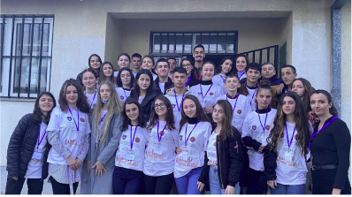Projekti "Biblioteka, Arti dhe Të Rinjtë" i dha jetë krijimtarisë së të rinjve, duke i bashkuar ata nga sektorë të ndryshëm për të eksploruar artin dhe kulturën. Përmes trajnimeve dhe aktiviteteve, pjesëmarrësit zhvilluan aftësi të reja, zgjeruan horizontet dhe ndërtuan lidhje frymëzuese me profesionistë, duke i fuqizuar për sfidat e ardhshme. Ky projekt është realizuar përgjatë vitit 2021-2022.
Me shumë...
Implementuar nga Vizioni Rinor i Shalës Mbështetur nga Zyra e Presidencës
Fuqizimi i të rinjëve përmes pjesëmarrjes në qeverisjen lokale
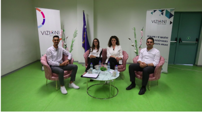Projekti ‘Fuqizimi i të rinjëve përmes pjesëmarrjes në qeverisjen lokale’ ka pasur për qëllim fuqizimin e angazhimit qytetar të grupeve të margjinalizuara, përkatësisht të rinjëve, për t’u përfaqësuar edhe ato në proceset e zhvillimit, përkatësisht të qeverisjes lokale, përmes ngritjes së “Grupit Këshillimor të të rinjve’, rritjen e aftësive të “Këshillave të Nxënësve” në shkollat e mesme të ulëta dhe të larta për të qenë pjesëmarrës në vendimmarrjen lokale. Ky projekt është realizuar në vitin 2022.
Me shumë...
Implementuar nga Vizioni Rinor i Shalës Mbështetur nga Kosovar Civil Society Foundations
Mbroje Trashëgiminë e Shalës
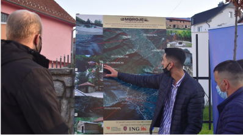Projekti "Mbroje Trashëgiminë e Shalës" (2020) synoi ruajtjen dhe promovimin e trashëgimisë kulturore dhe natyrore të Shalës. Duke përfshirë komunitetin dhe ekspertët, projekti mbrojti traditat, monumentet dhe peizazhet e zonës së Shalës dhe përreth, duke edukuar pjesëmarrësit mbi rëndësinë e trashëgimisë dhe ruajtjen e saj për brezat e ardhshëm. Ky angazhim ka forcuar lidhjet mes komunitetit dhe kulturës së tyre të pasur. Ky projekt është realizuar në vitin 2020.
Me shumë...
Implementuar nga Vizioni Rinor i Shalës Mbështetur nga IPKO Foundation
Anti Covid-19 Advocates
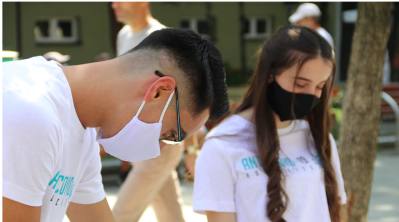Projekti "Anti Covid-19 Advocates" synoi të ndihmojë në luftën kundër pandemisë me Covid-19 përmes fushatave ndërgjegjësuese dhe shpërndarjes së pajisjeve mbrojtëse. Pjesëmarrësit mësuan rreth masave parandaluese dhe kontribuan në mbrojtjen e shëndetit publik, duke mbështetur grupet më të prekura dhe forcimin e sistemit shëndetësor. Ky projekt është realizuar në vitin 2020.
Me shumë...
Implementuar nga Vizioni Rinor i Shalës Mbështetur nga Peer Educators Network
Youth in Action
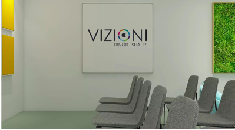Projekti "Youth in Action" kishte për qëllim krijimin e një hapësire të dedikuar për të rinjtë, duke rregulluar Zyrën e të Rinjve. Ky projekt siguroi një mjedis ku të rinjtë mund të zhvillojnë aktivitete, të angazhohen në projekte dhe të marrin pjesë në trajnime që i ndihmojnë ata në zhvillimin personal dhe profesional. Hapësira e renovuar tashmë është një qendër e rëndësishme për aktivitetet rinore dhe një vend për mbledhje e bashkëpunim në komunitet. Ky projekt është realizuar në vitin 2021.
Me shumë...
Implementuar nga Vizioni Rinor i Shalës Mbështetur nga IPKO Foundation
Play Based Learning
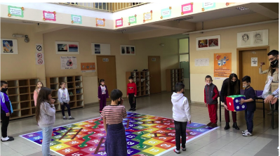Projekti "Play Based Learning" u implementua me sukses për të revolucionarizuar mënyrën e të mësuarit të fëmijëve përmes integrimit të lojës si metodë kryesore. Ky projekt ka ndihmuar në përmirësimin e aftësive kognitive, sociale dhe emocionale të fëmijëve, duke ofruar një ambient më të natyrshëm dhe të këndshëm për zhvillimin e tyre të gjithanshëm. Ky projekt është realizuar në vitin 2019.
Me shumë...
Implementuar nga Vizioni Rinor i Shalës Mbështetur nga Peer Educators Network
Mërgata Fest and Sports 2024
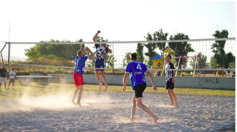Projekti "Mërgata Fest and Sports 2024" është realizuar me sukses dhe ka sjellë një festë të paharrueshme që bashkon kulturën dhe sportin në një ngjarje të veçantë. Ky projekt ka promovuar kulturën dhe traditën, si dhe organizimin e aktiviteteve sportive që angazhojnë komunitetin. Me një program të pasur që përfshiu performanca artistike, ekspozita kulturore dhe gara sportive, projekti ka ndihmuar në forcimin e lidhjeve ndërmjet individëve dhe ka krijuar mundësi për bashkëpunim dhe argëtim. "Mërgata Fest and Sports 2024" ka ofruar një mundësi të shkëlqyer për të bashkuar diasporën me vendlindjen dhe për të festuar diversitetin kulturor dhe sportiv në një ambient integrues. Ky projekt është realizuar në muajt Korrik-Gusht 2024.
Me shumë...
Implementuar nga Vizioni Rinor i Shalës Mbështetur nga Komuna e Lipjanit
Kujtesa Kolektive Gjatë Luftës së 98-99 në Grykën e Shalës
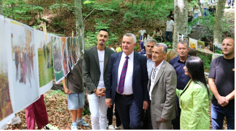Projekti "Kujtesa Kolektive Gjatë Luftës së 98-99 në Grykën e Shalës" është implementuar për të ruajtur dhe reflektuar kujtesën kolektive mbi atë se çfarë ka ndodhur realisht gjatë viteve 98-99 në Grykën e Shalës. Pjesë e projektit ishin edhe tendat e improvizuara që pasqyronin kushtet dhe përjetimet e asaj kohe, se si mijëra banorë të zonër kanë jetuar në atë kohë. Përmes ekspozitave, dokumentarëve, tendave dhe aktiviteteve edukative, projekti ka ndihmuar në ndriçimin e ngjarjeve të rëndësishme, duke forcuar lidhjet ndërmjet të kaluarës dhe të tashmes, dhe duke kontribuar në ruajtjen e kujtesës kolektive të komunitetit. Ky projekt është realizuar në muajin Qershor 2024.
Me shumë...
Implementuar nga Vizioni Rinor i Shalës Mbështetur nga Drejtoria për Kulturë, Rini dhe Sport e Komunës së Lipjanit
Unë sfidoj pabarazinë dhe stereotipet gjinore
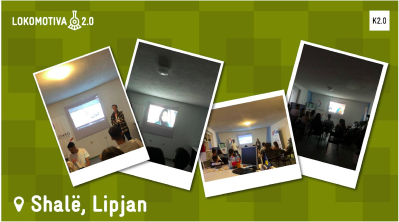Projekti "Unë Sfidoj Pabarazinë dhe Stereotipet Gjinore"ka pasur për qëllim ngritjen e vetëdijes mbi të rinjëve rreth pabarazitsë dhe stereotipeve gjinore në komunitet. Me trajnime, workshope dhe fushata ndërgjegjësimi, projekti ka ndihmuar në krijimin e një mjedisi më të barabartë dhe përfshirës, duke fuqizuar individët të ndryshojnë perceptimet dhe praktikat e ndikuara nga stereotipet gjinore. Ky projekt është realizuar në vitin 2021.
Me shumë...
Implementuar nga Vizioni Rinor i Shalës Mbështetur nga Kosovo 2.0
Rini Aktive
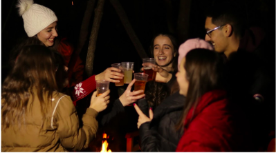Projekti "Rini Aktive" është implementuar me sukses për të fuqizuar të rinjtë dhe inkurajuar angazhimin e tyre në aktivitete që kontribuojnë në përmirësimin e komuniteteve. Pjesëmarrësit kanë pasur mundësinë të planifikojnë dhe të angazhohen në diskutime mbi çështje sociale dhe lokale. Ky projekt ka ofruar një mundësi të shkëlqyer për të rinjtë që të zhvillojnë aftësi dhe të luajnë një rol aktiv në ndërtimin e një komuniteti më të bashkuar dhe më të angazhuar. Ky projekt është realizuar në vitin 2021.
Me shumë...
Implementuar nga Vizioni Rinor i Shalës Mbështetur nga Drejtoria për Kulturë, Rini dhe Sport e Komunës së Lipjanit
Rinia në Vullnetarizëm
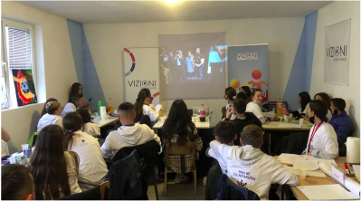Projekti "Rinia në Vullnetarizëm" ka pasur për qëllim të inkurajojë dhe fuqizojë të rinjtë në angazhimin e tyre në aktivitete vullnetarizmi. Përmes aktiviteteve të ndryshme, projekti ka ndihmuar në zhvillimin e aftësive të rëndësishme dhe ka promovuar një kulturë angazhimi dhe solidariteti tek të rinjët e Komunës së Lipjanit dhe Shtimes. Të rinjtë pjesëmarrës kanë kontribuar në ndërtimin e një shoqërie më të bashkuar dhe më të angazhuar, duke bërë një ndryshim pozitiv për të gjithë. Ky projekt është realizuar në vitin 2021.
Me shumë...
Implementuar nga Vizioni Rinor i Shalës Mbështetur nga Ministria e Kulturës, Rinisë dhe Sportit
Kujdesu për veten, ruaje shnetën
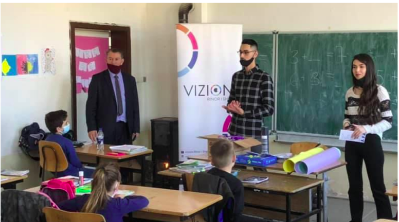Projekti "Kujdesu për Veten, Ruaje Shëndetin" ka promovuar rëndësinë e mbajtjes së maskave mbrojtëse në kohën e pandemisë me Covid-19 tek nxënësit e niveli 1-5 të shkollave SHFMU ‘Ibrahim Banushi’ në Shalë dhe SHFMU ‘Haradin Bajrami’ në Magurë. Njëkohësisht nxënësit janë informuar mbi aspekte tjera të higjienës personale. Ky projekt është realizuar në vitin 2020.
Me shumë...
Implementuar nga Vizioni Rinor i Shalës Mbështetur nga Drejtoria për Kulturë, Rini dhe Sport e Komunës së Lipjanit
Rini Europiane
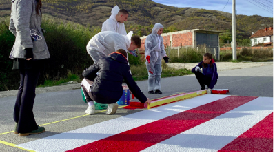Projekti "Rini Europiane" ka promovuar bashkëpunimin dhe angazhimin e të rinjve në nivel evropian përmes aktiviteteve ndërkulturore. Ai ka ofruar mundësi për programe shkëmbimi dhe projekte të përbashkëta, ndihmuar në ndërtimin e lidhjeve të forta mes të rinjve nga vende të ndryshme evropiane. Pjesëmarrësit kanë zhvilluar aftësi të vlefshme dhe kanë krijuar lidhje të qëndrueshme, duke kontribuar në ndërtimin e një shoqërie më të bashkuar dhe të integruar. Projekti është realizuar në vitin 2023-2024.
Me shumë...
Implementuar nga Vizioni Rinor i Shalës Mbështetur nga Ministria e Kulturës, Rinisë dhe Sportit
Breathe Freely Shala
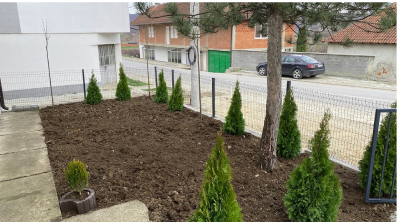Projekti ‘Breathe Freely Shala’ ka pasur për qëllim përmirësimin e cilësisë së ajrit dhe mjedisit në fshatin Shalë përmes rregullimi të hapësirës së jashtme të Zyrës së Gjendjes Civile. Përveç që është rregulluar hapësira, duke u shëndrruar në një ambient shumë më gjelbërues, janë realizuar edhe një seri aktivitetesh që kanë pasur ndikim direkt në përmirësimin e situatës në terren dhe ngritjen e vetëdijes tek banorët e fshatit Shalë për rrezikshmërinë e përdorimit të thëngjillit për ngrohje. Kështu me anë të ligjeratave, kampanjës online dhe avokimit me hisedarë vendimmarrës është bërë progres në këtë drejtim. Ky projekt është realizuar në vitin 2024.
Me shumë...
Implementuar nga Vizioni Rinor i Shalës Mbështetur nga Peer Educators Network
Atele e Artit
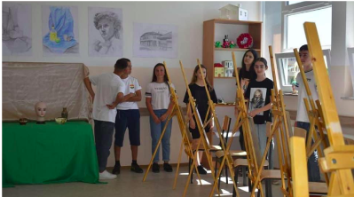Projekti ‘Atele e Artit’ i realizuar në SHFMU ‘Haradin Bajrami’ në Magurë, ka pasur për qëllim krijimin e Atelesë së Artit për nxënësit e kësaj shkolle, në mënyrë që të njëjtit të kenë hapësirë të veçantë për shprehjen e talentit të tyre në art, përkatësisht vizatim e pikturim. Përmes pajisjeve të ndryshme si, kavaleta, mjete pune, nxënësitë tashmë e kanë të lehtë zhvillimin e orës mësimore ‘Arti Figurativ’, njëkohësisht mësimdhënësit përkatës të lëndës. Ky projekt është realizuar në vitin 2022.
Me shumë...
Implementuar nga Vizioni Rinor i Shalës Mbështetur nga IPKO Foundation
Muaji rozë
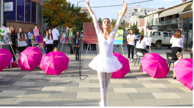Ky projekt ka pasur për qëllim ngritjen e vetëdijes tek gratë, për diagnostifikim të hershëm të Kancerit të Gjirit, informimin mbi simptomat, cilat janë fazat që duhet për tu kuruar, si mund të bëjnë vetëkontroll, sa herë duhet të kontrollohen, nga cila moshë mund të bëjnë mamografi etj. Në kuadër të këtij projekti është shënuar Dita Ndërkombëtare e Kancerit të Gjitit në Komunën e Lipjanit përmes ecjes së përbashkët, ligjeratës për parandalimin dhe shërimin me kohë të Kancerit të Gjirit, si dhe programit artistik me nxënës. Ky projekt është realizuar në muajin Tetor 2022.
Me shumë...
Implementuar nga Vizioni Rinor i Shalës Mbështetur nga Drejtoria për Kulturë, Rini dhe Sport e Komunës së Lipjanit
Darka e Lamës
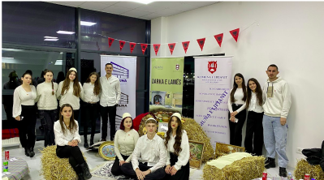Projekti ‘Darka e Lamës’ i realizuar për nderë të Ditës së Flamurit, me synim që përmes këtij projekti të rinjët do të njoftohen me festën tradicionale të shqiptarëve, festë kjo e cila është pak e njohur tek të rinjët e Komunës së Lipjanit. Duhet theksuar se një aktivitet siç është Darka e Lamës është realizuar për herë të parë në Komunën tonë. Në këtë aktivitet janë përfshirë hapësirë me mjete të vjetra dhe ushqime të ndryshme tradicionale si flija , pite të llojeve të ndryshme , bakllava etj. Ky projekt është realizuar në muajin Nëntor 2023.
Me shumë...
Implementuar nga Vizioni Rinor i Shales Mbështetur nga Drejtoria për Kulturë, Rini dhe Sport e Komunës së Lipjanit
-Shala e Pastër-
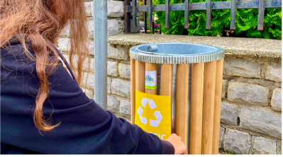Projekti “Shala e Pastër” ka pasur për synim të përmirësojë cilësinë e mjedisit tonë duke e bërë fshatin Shalë më të pastër, përmes vendosjes së 10 shportave përgjatë rrugëve kryesore të fshatit Shalë, si dhe ndërgjegjësimit të grupeve të ndryshme të komunitetit përmes ligjeratave vetëdijësuese, si dhe ndërmarrjes së aksioneve të pastrimit. Ky projekt është realizuar në muajin Shtator 2024.
Me shumë...
Implementuar nga Vizioni Rinor i Shales Mbështetur nga IPKO Foundation